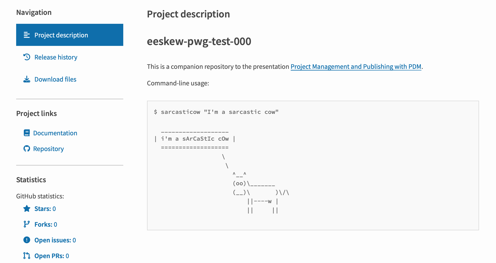

Publishing on (Test)PyPI#
Part 2 of notes from a talk given to the WSU Python Working Group on February 8, 2023.
Here, we’ll cover the basics of publishing a project on PyPI or TestPyPI using PDM, including managing relevant project metadata.
This tutorial is primarily aimed at macOS and Linux users, although the commands for Windows should mostly translate.
Note
A companion repository with the example project created in these notes is available here.
Package version#
Right now, the package version ("0.1.0") is stored in the pyproject.toml file (in the project.version keyword). The best practice is to place this in a __version__.py file, and have that be the single source of truth for our package version.
Create the file src/eeskew_pwg_test_000/__version__.py, and add the __version__ variable to it. The new file should look like:
# src/eeskew_pwg_test_000/__version__.py
__version__ = "0.1.0"
Now modify the pyproject.toml file so that the version is dynamic metadata:
# pyproject.toml
[tool.pdm]
version = { source = "file", path = "src/eeskew_pwg_test_000/__version__.py" }
[tool.pdm.dev-dependencies]
dev = [
"black>=23.1.0",
...
]
[project]
name = "eeskew-pwg-test-000"
description = "A test project for presentation to the WSU Python Working Group."
authors = [
...
requires-python = ">=3.11"
readme = "README.md"
license = {text = "MIT"}
dynamic = ["version"]
[build-system]
requires = ["pdm-pep517>=1.0"]
...
Click below to show diff:
Show code cell outputs
────────────────────────────────────────────────────────────────────────────────
modified: pyproject.toml
────────────────────────────────────────────────────────────────────────────────
@ pyproject.toml:3 @
[tool.pdm]
+version = { source = "file", path = "src/eeskew_pwg_test_000/__version__.py" }
+
[tool.pdm.dev-dependencies]
dev = [
"black>=23.1.0",
@ pyproject.toml:11 @ dev = [
[project]
name = "eeskew-pwg-test-000"
-version = "0.1.0"
description = "A test project for presentation to the WSU Python Working Group."
authors = [
{name = "Edward Eskew", email = "edward.eskew@wsu.edu"},
@ pyproject.toml:21 @ dependencies = [
requires-python = ">=3.11"
readme = "README.md"
license = {text = "MIT"}
+dynamic = ["version"]
[build-system]
requires = ["pdm-pep517>=1.0"]
Note the new project.dynamic array, the new tool.pdm.version table, and that the project.version key is gone.
We can check the version like so:
pdm show --version eeskew-pwg-test-000
0.1.0
We should also add the __version__ variable to src/eeskew_pwg_test_000/__init__.py:
# src/eeskew_pwg_test_000/__init__.py
from eeskew_pwg_test_000.__version__ import __version__
This allows us to check the version from python in the conventional way:
pdm run python -c "import eeskew_pwg_test_000; print(eeskew_pwg_test_000.__version__)"
0.1.0
See also
See the PDM docs on dynamic versioning for more information.
Packaging the project#
Let’s review the project as it exists so far:
tree
.
├── README.md
├── pdm.lock
├── pyproject.toml
└── src
└── eeskew_pwg_test_000
├── __init__.py
├── __pycache__
│ ├── __init__.cpython-311.pyc
│ ├── __version__.cpython-311.pyc
│ └── utils.cpython-311.pyc
├── __version__.py
└── utils.py
3 directories, 9 files
pdm build
Building sdist...
Built sdist at
/Users/Ed/python/eds-notes/repos/eeskew-pwg-test-000/dist/eeskew-pwg-test-000-0.
1.0.tar.gz
Building wheel...
Built wheel at
/Users/Ed/python/eds-notes/repos/eeskew-pwg-test-000/dist/eeskew_pwg_test_000-0.
1.0-py3-none-any.whl
What happened?#
We’ve created a new directory named dist, where these two distribution formats have been placed.
tree
.
├── README.md
├── build
├── dist
│ ├── eeskew-pwg-test-000-0.1.0.tar.gz
│ └── eeskew_pwg_test_000-0.1.0-py3-none-any.whl
├── pdm.lock
├── pyproject.toml
└── src
└── eeskew_pwg_test_000
├── __init__.py
├── __pycache__
│ ├── __init__.cpython-311.pyc
│ ├── __version__.cpython-311.pyc
│ └── utils.cpython-311.pyc
├── __version__.py
└── utils.py
5 directories, 11 files
We could install this project into a different python environment with python -m pip install dist/eeskew-pwg-test-000-0.1.0.tar.gz or python -m pip install dist/eeskew_pwg_test_000-0.1.0-py3-none-any.whl (the latter is faster).
Publishing the project#
Now we’ll publish the project on (Test)PyPI.
Note
To publish on the actual index (PyPI, not TestPyPI), simply replace testpypi with pypi in the instructions that follow. Try not to pollute PyPI with throwaway projects!
Setting up PyPI credentials#
First, make an account on TestPyPI.
Navigate to your account settings, scroll down to “API tokens”, and click “Add API token”
Give the token a descriptive name, set the scope to “Entire account (all projects)”, and click “Add token”.
Copy the token that appears - heeding the warning that it will appear only once!
Now we’ll configure PDM with these credentials (replacing
<PASTE_YOUR_TOKEN_HERE>with the token you’ve just copied):
pdm config repository.testpypi.username "__token__"
pdm config repository.testpypi.password "<PASTE_YOUR_TOKEN_HERE>"
Setting up a test-publish PDM script#
To publish on PyPI, we could now simply run:
pdm publish -r testpypi
Note that you do not need to run pdm build first - PDM will build the distribution as part of publish anyway.
See also
See the PDM docs on publishing to PyPI for more information.
However, TestPyPI won’t let you overwrite an existing version of your package, so we have to bump our version every time we want to do this. Let’s set up a PDM script to automate that.
Attention
If you are publishing on PyPI (not TestPyPI), you probably don’t want to use this script. Publishing will be as simple as running pdm bump {version} to increment your package version number (for example, pdm bump patch), and then publishing with pdm publish (equivalent to pdm publish -r pypyi).
First, ensure you have the pdm-bump plugin installed.
We add a new PDM script in the tool.pdm.scripts table of pyproject.toml:
# pyproject.toml
[tool.pdm]
version = { source = "file", path = "src/eeskew_pwg_test_000/__version__.py" }
[tool.pdm.scripts]
test-publish.shell = '''\
VERSION=$(pdm show --version eeskew-pwg-test-000)
pdm bump patch > /dev/null
BUMPED_VERSION=$(pdm show --version eeskew-pwg-test-000)
DEV_VERSION=$BUMPED_VERSION.dev$(date +%s)
echo "__version__ = \"$DEV_VERSION\"" > src/eeskew_pwg_test_000/__version__.py
pdm publish -r testpypi
echo "__version__ = \"$VERSION\"" > src/eeskew_pwg_test_000/__version__.py
'''
[tool.pdm.dev-dependencies]
dev = [
"black>=23.1.0",
...
Click below to show diff:
Show code cell outputs
────────────────────────────────────────────────────────────────────────────────
modified: pyproject.toml
────────────────────────────────────────────────────────────────────────────────
@ pyproject.toml:4 @
[tool.pdm]
version = { source = "file", path = "src/eeskew_pwg_test_000/__version__.py" }
+[tool.pdm.scripts]
+test-publish.shell = '''\
+VERSION=$(pdm show --version eeskew-pwg-test-000)
+pdm bump patch > /dev/null
+BUMPED_VERSION=$(pdm show --version eeskew-pwg-test-000)
+DEV_VERSION=$BUMPED_VERSION.dev$(date +%s)
+echo "__version__ = \"$DEV_VERSION\"" > src/eeskew_pwg_test_000/__version__.py
+pdm publish -r testpypi
+echo "__version__ = \"$VERSION\"" > src/eeskew_pwg_test_000/__version__.py
+'''
+
[tool.pdm.dev-dependencies]
dev = [
"black>=23.1.0",
When we run pdm run test-publish, this script:
Gets the current version with
pdm show --versionChanges the package version to a patch bump of that version with
.dev{date in seconds}appended. This is a developmental release format.Publishes the package on TestPyPI
Returns the package version to its original value
Let’s run it!
pdm run test-publish
Building sdist...
Built sdist at
/Users/Ed/python/eds-notes/repos/eeskew-pwg-test-000/dist/eeskew-pwg-test-000-0.
1.1.dev1678597709.tar.gz
Building wheel...
Built wheel at
/Users/Ed/python/eds-notes/repos/eeskew-pwg-test-000/dist/eeskew_pwg_test_000-0.
1.1.dev1678597709-py3-none-any.whl
Uploading eeskew_pwg_test_000-0.1.1.dev1678597709-py3-none-any.whl
Uploading eeskew-pwg-test-000-0.1.1.dev1678597709.tar.gz
100% ━━━━━━━━━━━━━━━━━━━━━━━━━━━━━━━━━━━━━━━━ 4.7/4.7 kB • 00:00 • ?
100% ━━━━━━━━━━━━━━━━━━━━━━━━━━━━━━━━━━━━━━━━ 4.7/4.7 kB • 00:00 • ?
100% ━━━━━━━━━━━━━━━━━━━━━━━━━━━━━━━━━━━━━━━━ 4.7/4.7 kB • 00:00 • ?
100% ━━━━━━━━━━━━━━━━━━━━━━━━━━━━━━━━━━━━━━━━ 4.7/4.7 kB • 00:00 • ?
100% ━━━━━━━━━━━━━━━━━━━━━━━━━━━━━━━━━━━━━━━━ 4.7/4.7 kB • 00:00 • ?
100% ━━━━━━━━━━━━━━━━━━━━━━━━━━━━━━━━━━━━━━━━ 4.7/4.7 kB • 00:00 • ?
100% ━━━━━━━━━━━━━━━━━━━━━━━━━━━━━━━━━━━━━━━━ 4.7/4.7 kB • 00:00 • ?
100% ━━━━━━━━━━━━━━━━━━━━━━━━━━━━━━━━━━━━━━━━ 4.7/4.7 kB • 00:00 • ?
100% ━━━━━━━━━━━━━━━━━━━━━━━━━━━━━━━━━━━━━━━━ 4.7/4.7 kB • 00:00 • ?
100% ━━━━━━━━━━━━━━━━━━━━━━━━━━━━━━━━━━━━━━━━ 4.7/4.7 kB • 00:00 • ?
100% ━━━━━━━━━━━━━━━━━━━━━━━━━━━━━━━━━━━━━━━━ 4.7/4.7 kB • 00:00 • ?
100% ━━━━━━━━━━━━━━━━━━━━━━━━━━━━━━━━━━━━━━━━ 4.7/4.7 kB • 00:00 • ?
100% ━━━━━━━━━━━━━━━━━━━━━━━━━━━━━━━━━━━━━━━━ 4.7/4.7 kB • 00:00 • ?
100% ━━━━━━━━━━━━━━━━━━━━━━━━━━━━━━━━━━━━━━━━ 4.7/4.7 kB • 00:00 • ?
100% ━━━━━━━━━━━━━━━━━━━━━━━━━━━━━━━━━━━━━━━━ 4.7/4.7 kB • 00:00 • ?
100% ━━━━━━━━━━━━━━━━━━━━━━━━━━━━━━━━━━━━━━━━ 4.7/4.7 kB • 00:00 • ?
100% ━━━━━━━━━━━━━━━━━━━━━━━━━━━━━━━━━━━━━━━━ 4.7/4.7 kB • 00:00 • ?
100% ━━━━━━━━━━━━━━━━━━━━━━━━━━━━━━━━━━━━━━━━ 4.7/4.7 kB • 00:00 • ?
100% ━━━━━━━━━━━━━━━━━━━━━━━━━━━━━━━━━━━━━━━━ 4.7/4.7 kB • 00:00 • ?
100% ━━━━━━━━━━━━━━━━━━━━━━━━━━━━━━━━━━━━━━━━ 4.7/4.7 kB • 00:00 • ?
100% ━━━━━━━━━━━━━━━━━━━━━━━━━━━━━━━━━━━━━━━━ 4.0/4.0 kB • 00:00 • ?
?25h
View at:
https://test.pypi.org/project/eeskew-pwg-test-000/0.1.1.dev1678597709/
Note
If you want to test installing from TestPyPI, you can do so as follows:
Make a new PDM project, add TestPyPI to the local project indices, then install:
pdm config --local pypi.test.url https://test.pypi.org/simple/
pdm add your-package
Create a new venv or conda environment, don’t forget to activate it, then run:
python -m pip install --index-url https://test.pypi.org/simple/ --extra-index-url https://pypi.org/simple/ your-package
Be sure not to pip install into your system or conda base environment! First make a new virtual environment using PDM, venv, or conda, and test your install there.
See also
See the PDM docs on PDM scripts for more information on writing PDM scripts.
Other project metadata#
There is quite a bit of project metadata we can specify in pyproject.toml - here are some other examples.
See also
See the PyPA specification for a complete list of possible metadata keys.
Add an entry point to the package#
If we’re developing a command-line application, we want our users to be able to run the application with a single command, not something like python path_to_script/script.py. We can enable this by adding an entry point to pyproject.toml.
First, add a new module and new function to src/eeskew_pwg_test_000/cli.py:
# src/eeskew_pwg_test_000/cli.py
import argparse
from eeskew_pwg_test_000.utils import sarcastic_cowsay
def main():
"""Cowsay something sarcastically from the command line."""
parser = argparse.ArgumentParser()
parser.add_argument("speech")
args = parser.parse_args()
s = args.speech
sarcastic_cowsay(s)
Now let’s add the script to pyproject.toml, in the project.scripts table:
# pyproject.toml
...
license = {text = "MIT"}
dynamic = ["version"]
[project.scripts]
sarcasticow = "eeskew_pwg_test_000.cli:main"
[build-system]
requires = ["pdm-pep517>=1.0"]
build-backend = "pdm.pep517.api"
Click below to show diff:
Show code cell outputs
────────────────────────────────────────────────────────────────────────────────
modified: pyproject.toml
────────────────────────────────────────────────────────────────────────────────
@ pyproject.toml:34 @ readme = "README.md"
license = {text = "MIT"}
dynamic = ["version"]
+[project.scripts]
+sarcasticow = "eeskew_pwg_test_000.cli:main"
+
[build-system]
requires = ["pdm-pep517>=1.0"]
build-backend = "pdm.pep517.api"
Note the new entry for sarcasticow in the project.scripts table.
To use the sarcasticow command, we need to re-install the project:
pdm install
⠋ Fetching hashes for resolved packages...
All packages are synced to date, nothing to do.
Installing the project as an editable package...
✔ Update eeskew-pwg-test-000 0.1.0 -> 0.1.0 successful
🎉 All complete!
?25h
Now we can run our command from within the environment:
pdm run sarcasticow "I'm a sarcastic cow"
___________________
| i'm a sArCaStIc cOw |
===================
\
\
^__^
(oo)\_______
(__)\ )\/\
||----w |
|| ||
Note
Because we’re using pdm for environment management, we still need to use pdm run to access the script installed into the virtual environment. We could also first activate the environment with eval $(pdm venv activate).
Unlike the test-publish PDM script we wrote earlier, if we activated the environment with source .venv/bin/activate, we could simply use the sarcasticow command by itself, and users who install our package with pip into their own virtualenv or conda environment will also have access to sarcasticow. Even better, users who install our package through pipx will be able to use the sarcasticow command without activating a virtual environment.
Updating README#
Thus far, we’ve left our README as an empty file. This is bad.
Let’s update README.md to show our utility’s usage:
# README.md
# eeskew-pwg-test-000
This is a companion repository to the presentation [Project Management and Publishing with PDM](https://edsq.github.io/eds-notes/python_notes/pwg_presentation/intro.html).
Command-line usage:
```
$ sarcasticow "I'm a sarcastic cow"
___________________
| i'm a sArCaStIc cOw |
===================
\
\
^__^
(oo)\_______
(__)\ )\/\
||----w |
|| ||
```
Project URLs#
We can add relevant URLs in the urls table, which will appear in the sidebar on PyPI.
In the project.urls table of pyproject.toml, we set Documentation to a link to our docs (this Jupyter Book), and Repository to the GitHub repo for this code.
# pyproject.toml
...
license = {text = "MIT"}
dynamic = ["version"]
[project.urls]
Documentation = "https://edsq.github.io/eds-notes/python_notes/pwg_presentation/intro.html"
Repository = "https://github.com/edsq/eeskew-pwg-test-000"
[project.scripts]
sarcasticow = "eeskew_pwg_test_000.cli:main"
...
Click below to show diff:
Show code cell outputs
────────────────────────────────────────────────────────────────────────────────
modified: pyproject.toml
────────────────────────────────────────────────────────────────────────────────
@ pyproject.toml:34 @ readme = "README.md"
license = {text = "MIT"}
dynamic = ["version"]
+[project.urls]
+Documentation = "https://edsq.github.io/eds-notes/python_notes/pwg_presentation/intro.html"
+Repository = "https://github.com/edsq/eeskew-pwg-test-000"
+
[project.scripts]
sarcasticow = "eeskew_pwg_test_000.cli:main"
Finally, we publish again to TestPYPI:
pdm run test-publish
Building sdist...
Built sdist at
/Users/Ed/python/eds-notes/repos/eeskew-pwg-test-000/dist/eeskew-pwg-test-000-0.
1.1.dev1678597731.tar.gz
Building wheel...
Built wheel at
/Users/Ed/python/eds-notes/repos/eeskew-pwg-test-000/dist/eeskew_pwg_test_000-0.
1.1.dev1678597731-py3-none-any.whl
Uploading eeskew_pwg_test_000-0.1.1.dev1678597731-py3-none-any.whl
Uploading eeskew-pwg-test-000-0.1.1.dev1678597731.tar.gz
100% ━━━━━━━━━━━━━━━━━━━━━━━━━━━━━━━━━━━━━━━━ 6.5/6.5 kB • 00:00 • ?
100% ━━━━━━━━━━━━━━━━━━━━━━━━━━━━━━━━━━━━━━━━ 6.5/6.5 kB • 00:00 • ?
100% ━━━━━━━━━━━━━━━━━━━━━━━━━━━━━━━━━━━━━━━━ 6.5/6.5 kB • 00:00 • ?
100% ━━━━━━━━━━━━━━━━━━━━━━━━━━━━━━━━━━━━━━━━ 6.5/6.5 kB • 00:00 • ?
100% ━━━━━━━━━━━━━━━━━━━━━━━━━━━━━━━━━━━━━━━━ 6.5/6.5 kB • 00:00 • ?
100% ━━━━━━━━━━━━━━━━━━━━━━━━━━━━━━━━━━━━━━━━ 6.5/6.5 kB • 00:00 • ?
100% ━━━━━━━━━━━━━━━━━━━━━━━━━━━━━━━━━━━━━━━━ 6.5/6.5 kB • 00:00 • ?
100% ━━━━━━━━━━━━━━━━━━━━━━━━━━━━━━━━━━━━━━━━ 6.5/6.5 kB • 00:00 • ?
100% ━━━━━━━━━━━━━━━━━━━━━━━━━━━━━━━━━━━━━━━━ 6.5/6.5 kB • 00:00 • ?
100% ━━━━━━━━━━━━━━━━━━━━━━━━━━━━━━━━━━━━━━━━ 6.5/6.5 kB • 00:00 • ?
100% ━━━━━━━━━━━━━━━━━━━━━━━━━━━━━━━━━━━━━━━━ 6.5/6.5 kB • 00:00 • ?
100% ━━━━━━━━━━━━━━━━━━━━━━━━━━━━━━━━━━━━━━━━ 6.5/6.5 kB • 00:00 • ?
100% ━━━━━━━━━━━━━━━━━━━━━━━━━━━━━━━━━━━━━━━━ 6.5/6.5 kB • 00:00 • ?
100% ━━━━━━━━━━━━━━━━━━━━━━━━━━━━━━━━━━━━━━━━ 6.5/6.5 kB • 00:00 • ?
100% ━━━━━━━━━━━━━━━━━━━━━━━━━━━━━━━━━━━━━━━━ 6.5/6.5 kB • 00:00 • ?
100% ━━━━━━━━━━━━━━━━━━━━━━━━━━━━━━━━━━━━━━━━ 6.5/6.5 kB • 00:00 • ?
100% ━━━━━━━━━━━━━━━━━━━━━━━━━━━━━━━━━━━━━━━━ 6.5/6.5 kB • 00:00 • ?
100% ━━━━━━━━━━━━━━━━━━━━━━━━━━━━━━━━━━━━━━━━ 6.5/6.5 kB • 00:00 • ?
100% ━━━━━━━━━━━━━━━━━━━━━━━━━━━━━━━━━━━━━━━━ 6.5/6.5 kB • 00:00 • ?
100% ━━━━━━━━━━━━━━━━━━━━━━━━━━━━━━━━━━━━━━━━ 6.5/6.5 kB • 00:00 • ?
100% ━━━━━━━━━━━━━━━━━━━━━━━━━━━━━━━━━━━━━━━━ 6.5/6.5 kB • 00:00 • ?
100% ━━━━━━━━━━━━━━━━━━━━━━━━━━━━━━━━━━━━━━━━ 5.3/5.3 kB • 00:00 • ?
?25h
View at:
https://test.pypi.org/project/eeskew-pwg-test-000/0.1.1.dev1678597731/
Our page on TestPyPI now shows the README, and the documentation and repository links are available on the sidebar:
Conclusion#
And that’s it! We’ve gone through the basics of project management, packaging, and publishing on (Test)PyPI.
Further reading#
Some good articles for further reading:
The official PyPA packaging tutorial is a good place to start.
I have taken quite a bit of inspiration in my work from the great series Hypermodern Python by Claudio Jolowicz. It goes into much greater detail on various points of project management than I did here, and is well worth a read.
Hypermodern Python uses the project manager Poetry, not PDM (see my thoughts on that below), but PDM can do nearly everything Poetry can do, so this series is still useful.
How to improve Python packaging, or why fourteen tools are at least twelve too many is a good overview of the mess of modern python project management tools.
Some important accepted Python Enhancement Proposals that shape the modern python packaging ecosystem:
Other project management tools#
You’ll note that Hypermodern Python recommends using the project manager Poetry. Poetry was a cutting-edge option at the time that series was written, and it has grown to considerable popularity. I chose not to recommend it in this tutorial for several reasons:
Poetry is not fully PEP 517 compliant. This means you and your users will not be able to use any other tool to build and install your project.
By default, Poetry imposes an upper bound on dependency version numbers. This goes against Python standards and will likely cause problems down the line: see articles here and here.
The Poetry developers chose to “deprecate” their old install script by causing it to randomly fail instead of sunsetting with a typical deprecation warning. This bizarre choice raises serious concerns about the future of the application.
PDM has considerably fewer open issues on GitHub than Poetry: at the time of this writing, 34 vs 575.
Some of this is explainable by PDM having fewer users than Poetry. However, PDM has 4.1k stars on Github vs. Poetry’s 24.1k, so using those stars as a proxy for the number of users, we see Poetry has 17 times the number of open issues but only 6 times the number of users as PDM.
The Poetry developers are famously stubborn and slow to implement new python standards, while the PDM developer is remarkably responsive and active in development.
Poetry is much more inflexible about resolving dependency conflicts than PDM, which quickly becomes a huge headache for complicated projects.
Another project manager worth looking in to is Hatch. I don’t have any experience with this particular tool, but it does support modern Python standards and has the benefit of being an official part of the Python Packaging Authority (PyPA). However, it does not have lockfile support, as there is not yet an established standard (PEP 665 was an attempt, but it was rejected). If you don’t need a lockfile in your work, it may be worth considering.
Finally, for those using conda, anaconda-project deserves a mention. It isn’t a full-fledged project manager (for example, you can’t easily use it to publish on PyPI), but it does dramatically simplify sharing and running code.